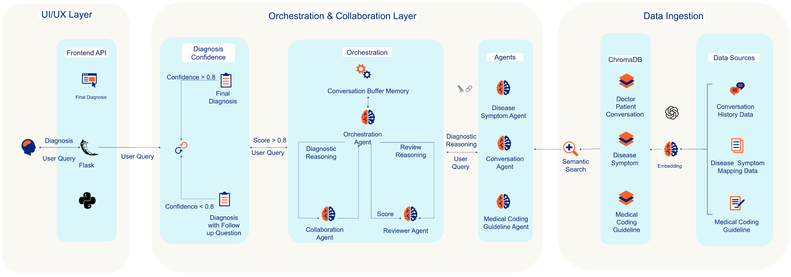

Disease Diagnosis AI
Purpose
This AI workflow supports auditors in validating complex clinical claims. It does not replace human expertise — it augments it with explainable, evidence-based recommendations.
System Architecture

Multi-Agent LLM Pipeline
Built on LangChain's agent framework with GPT-4 as the reasoning backbone. The system orchestrates specialized agents through a sequential chain, each handling a distinct validation task with structured output parsing.
Agent Roles
Medical History Analyst: Extracts structured patient data (ICD-10 codes, prior diagnoses, medication history) from unstructured clinical notes using few-shot prompting and entity extraction.
Symptom-Disease Mapper: Queries a ChromaDB vector store containing 10K+ symptom-disease relationships embedded via OpenAI ada-002. Uses cosine similarity thresholding (≥0.82) for retrieval with MMR diversity scoring.
Conversation Analyzer: Parses doctor-patient transcripts to identify mentioned symptoms, treatment discussions, and diagnostic reasoning. Outputs JSON-structured evidence with confidence scores.
Validation Synthesizer: Aggregates outputs from upstream agents, cross-references against ground truth diagnoses, and generates explainable recommendations with cited evidence chains.
RAG Implementation
Retrieval-Augmented Generation pipeline with ChromaDB as the vector store. Documents chunked using recursive text splitting (chunk_size=1000, overlap=200). Contextual compression applied to reduce token usage while preserving semantic relevance. Retriever configured with k=5 and reranking via cross-encoder models.
Impact
- Faster, more consistent claim validation
- Auditable reasoning for every decision
- Validation results benchmarked against ground truth
- Designed to assist auditors, not replace them